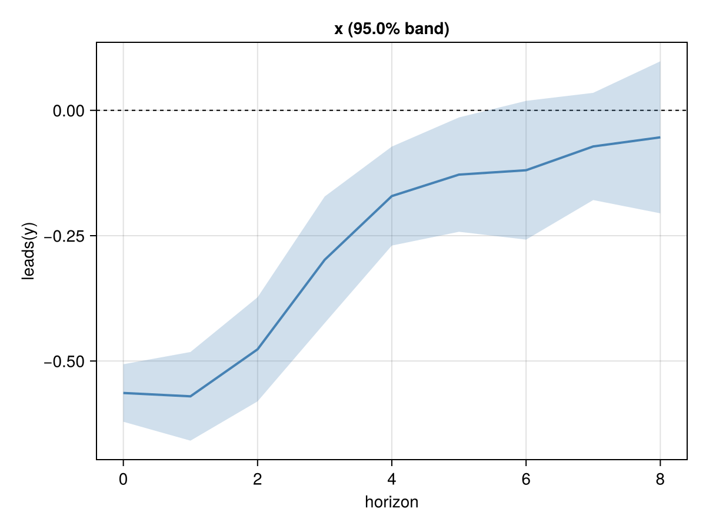

Getting started
A fixed-effects panel local projection on fx_balanced, one of the synthetic panels in test/fixtures/synthetic/ (30 units, 60 periods).
using PanelLocalProjections, DelimitedFiles
path = joinpath(pkgdir(PanelLocalProjections), "test", "fixtures", "synthetic", "fx_balanced.csv")
raw, hdr = readdlm(path, ','; header = true)
data = (; (Symbol(h) => (h in ("id", "t", "grp", "reg") ? Int.(raw[:, j]) : Float64.(raw[:, j]))
for (j, h) in enumerate(vec(hdr)))...)
r = panellp(@formula(leads(y) ~ x + lags(x, 1) + lags(y, 1) + w + fe(id) + fe(t)), data;
id = :id, time = :t, horizon = 8)Panel local projection (WithinFE), horizons 0:8
response: leads(y)
shock: x
regressors: x, L1.x, L1.y, w
fixed effects: id, t
panel: 30 units (id), 60 periods (t), 1800 rows
observations by horizon: 1770, 1740, 1710, 1680, 1650, 1620, 1590, 1560, 1530Standard errors clustered by unit, with Stata's small-sample correction and t(G − 1) critical values:
s = summarize(r, Clustered(:unit))Impulse response of leads(y) to x
Variance: Clustered(:unit; ssc = :stata); 95% bands
h coef se lower upper df nobs
0 -0.563772 0.0280563 -0.621154 -0.50639 29 1770
1 -0.570428 0.0432506 -0.658885 -0.481971 29 1740
2 -0.476619 0.0507631 -0.580441 -0.372797 29 1710
3 -0.298025 0.0617335 -0.424284 -0.171766 29 1680
4 -0.17095 0.0482778 -0.269689 -0.0722107 29 1650
5 -0.12815 0.0557703 -0.242213 -0.0140872 29 1620
6 -0.119429 0.0676798 -0.25785 0.0189913 29 1590
7 -0.0719686 0.0522949 -0.178924 0.0349866 29 1560
8 -0.0537637 0.074149 -0.205415 0.0978881 29 1530The same coefficients with Driscoll–Kraay standard errors:
summarize(r, DriscollKraaySE(); level = 0.9)Impulse response of leads(y) to x
Variance: DriscollKraaySE(:nw94; ssc = :stata); 90% bands
h coef se lower upper df nobs
0 -0.563772 0.0277873 -0.61022 -0.517324 58 1770
1 -0.570428 0.045046 -0.645746 -0.49511 57 1740
2 -0.476619 0.0498699 -0.560028 -0.393211 56 1710
3 -0.298025 0.0445194 -0.372507 -0.223542 55 1680
4 -0.17095 0.0506229 -0.255671 -0.0862291 54 1650
5 -0.12815 0.0657521 -0.238227 -0.0180737 53 1620
6 -0.119429 0.0634412 -0.225674 -0.0131851 52 1590
7 -0.0719686 0.0530525 -0.160847 0.0169094 51 1560
8 -0.0537637 0.0532713 -0.143041 0.035514 50 1530Plot with Makie (load a backend such as CairoMakie), or with Plots.jl (plot(s)):
using CairoMakie
irfplot(s)